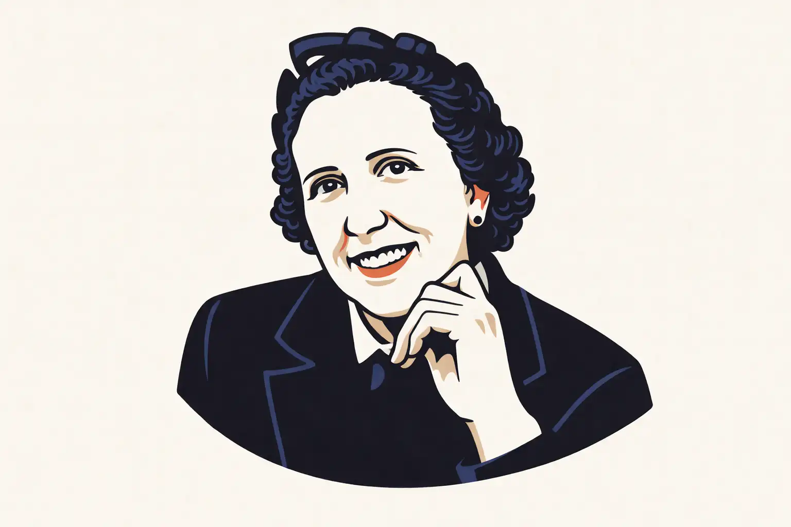
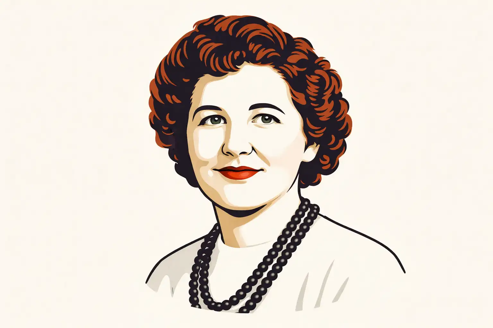
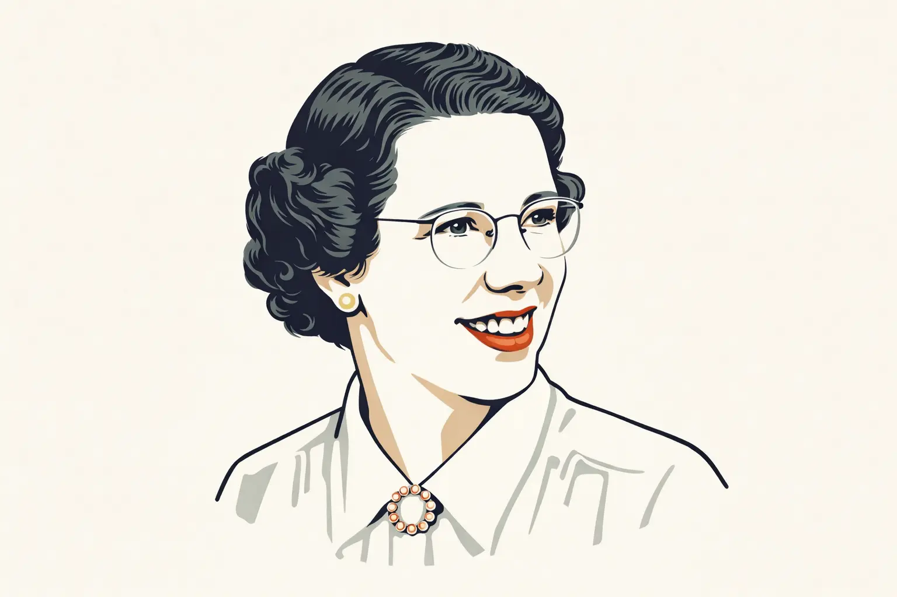
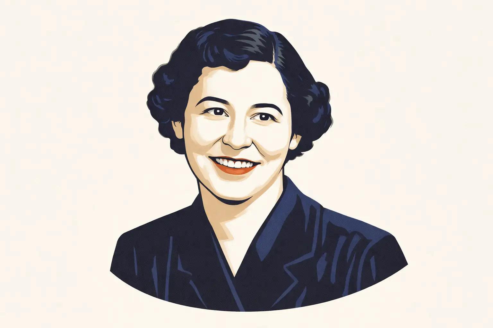
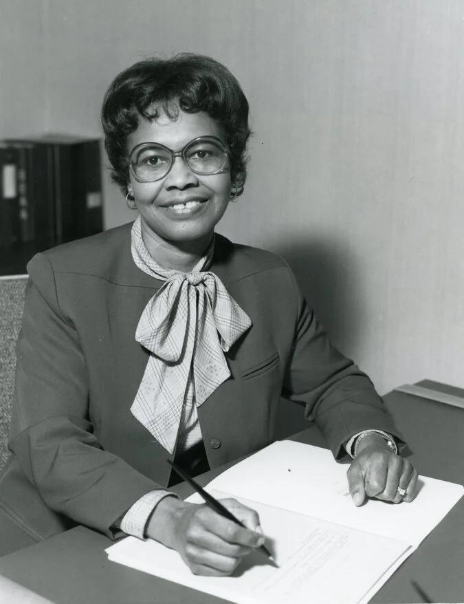
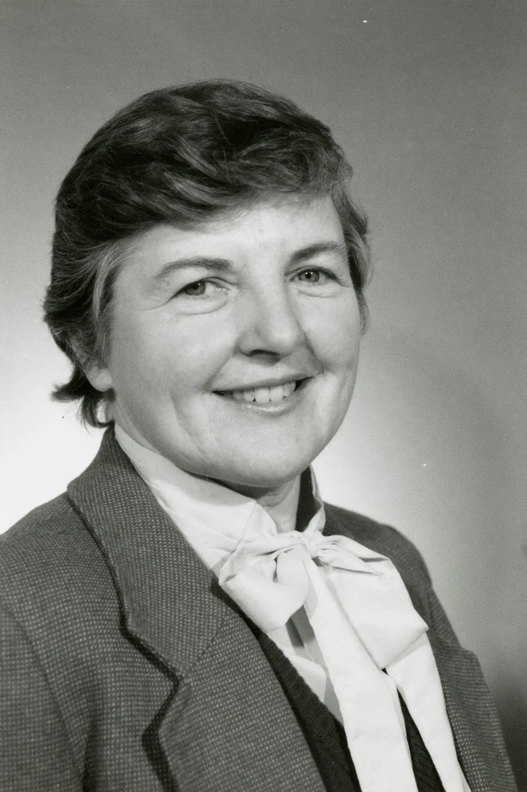
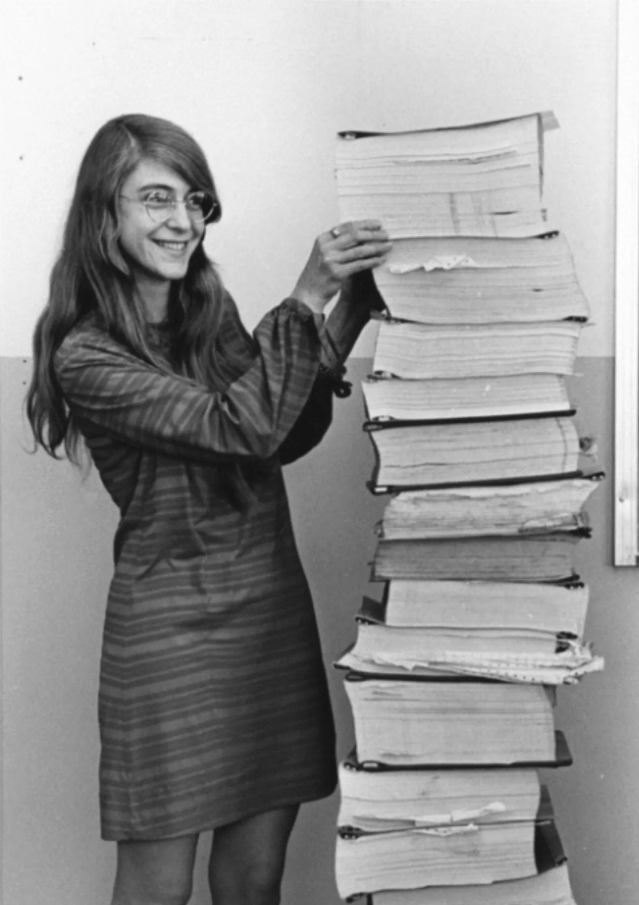
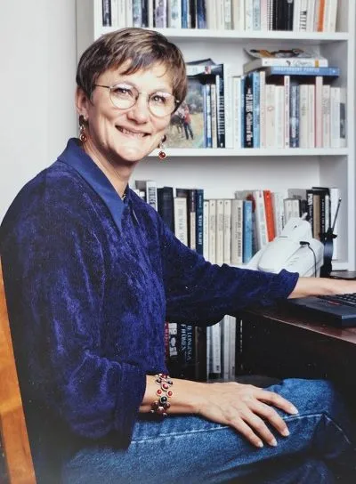
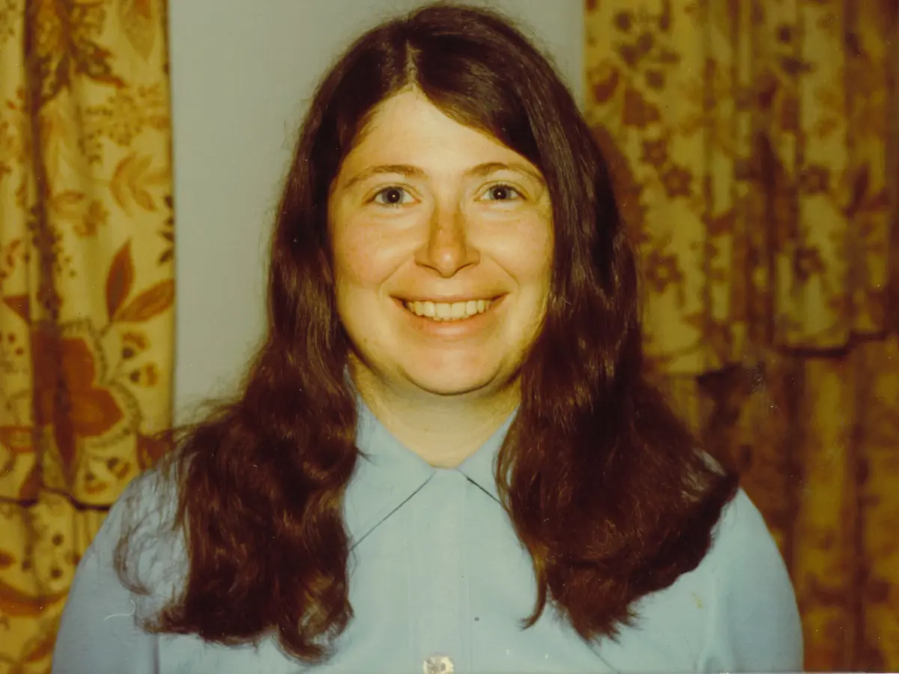

En , seis mujeres escribieron el futuro con sus manos. Kathleen McNulty, Jean Jennings, Betty Snyder, Marlyn Wescoff, Ruth Lichterman y Frances Bilas cablearon, codificaron y ejecutaron los primeros programas de la historia de la computación moderna. El mundo aplaudió la máquina pero silenció sus nombres.
Durante décadas, la fotografía más famosa del ENIAC circuló sin pie de foto. Nadie preguntó quiénes eran las mujeres que aparecían en ella. Se asumió que eran modelos, decoración, fondo.
Este sitio existe para no olvidar. Para devolver el nombre a quienes el relato oficial convirtió en sombras. Porque la historia de la tecnología no puede contarse bien si se cuenta a medias.
Contexto histórico
LA GUERRA NECESITA CÁLCULOS
El ejército estadounidense necesitaba miles de cálculos balísticos para mejorar la precisión
de su artillería.
Hacerlos a mano llevaba horas. A veces días.
LOS HOMBRES ESTÁN EN EL FRENTE
Muchos ingenieros habían sido enviados a la guerra. Las universidades comenzaron a contratar
jóvenes matemáticas como "computadoras humanas".
No eran consideradas ingenieras. Solo asistentes técnicas.
La programación aún no existía.
ELLAS LA INVENTARON
NACE ENIAC
El ENIAC fue el primer ordenador electrónico de gran escala.
Diseñado para cálculos militares, y programado manualmente con cables y paneles.
No existía el software: se programaba moviendo cables y paneles manualmente. Un reto físico
y lógico.
Electronic Numerical Integrator and Computer
El físico John Mauchly y el ingeniero electrónico J. Presper
Eckert
Los 17.468 tubos de vacío que alimentaban el ENIAC
Fotografía de cableado y conexiones del ENIACDiagrama de funcionamiento del ENIAC
Creadores
John Mauchly y John Presper Eckert diseñaron la ENIAC en la
Universidad de Pensilvania para el ejército estadounidense con
el objetivo de calcular trayectorias balísticas.
Propósito
Fue uno de los primeros ordenadores electrónicos de gran escala.
Fue creado para realizar cálculos complejos miles de veces más
rápido que cualquier humano.
Escala
ENIAC ocupaba 167 metros cuadrados y pesaba aproximadamente 27
toneladas. Era una de las computadoras más grandes construidas
hasta ese momento, distribuyéndose a lo largo de una gran sala.
Componentes
ENIAC contaba con 17,468 tubos de vacío, 70,000 resistencias,
10,000 condensadores y 7,200 diodos de cristal.
Funcionamiento
Cada tubo de vacío funcionaba como un interruptor electrónico,
permitiendo que los circuitos realizaran operaciones lógicas.
Digitalización
En lugar de utilizar métodos mecánicos o electromagnéticos para
representar datos, ENIAC usaba pulsos eléctricos para manipular
la información en binario (1 y 0).
Programación
Para programar ENIAC, sus operadoras debían manipular más de
6,000 interruptores y conectar un entramado de cables de manera
física.
Dificultad
Cada nueva tarea requería una reconfiguración manual, lo que
podía tomar días o incluso semanas. Este proceso era tedioso, lo
que impulsó el desarrollo de la programación y la automatización
de procesos.
Capacidades
Podía realizar 5,000 sumas o 300 multiplicaciones por segundo,
algo insignificante hoy en día pero revolucionario para la
época.
Consumo energético
Consumía aproximadamente 150 kW a 160 kW, generando apagones
ocasionales en la ciudad de Filadelfia.
Calor
Para evitar el sobrecalentamiento, era necesario instalar
sistemas de ventilación avanzados y en ocasiones incluso abrir
puertas y ventanas para permitir la disipación del calor.
Fallas
Se estima que cada 48 horas una o varias de estas válvulas
fallaban, interrumpiendo el funcionamiento del sistema.
Comenzaron a dejarlo encendido continuamente para minimizar
estos problemas.
Invisibilizadas
EL ENIAC SE PRESENTA AL MUNDO
Los ingenieros John W. Mauchly y J. Presper Eckert son
celebrados como los creadores del primer gran ordenador
electrónico.
LA HISTORIA LAS OLVIDA
En muchas fotografías aparecen junto al ENIAC.
Pero son descritas como operadoras o modelos.
Incluso se utilizó el término refrigerator ladies.
LA HISTORIA SE REESCRIBE
En los años 80, la programadora Kathy Kleiman encontró una
fotografía del ENIAC con varias mujeres junto a la máquina.
Cuando preguntó quiénes eran, le dijeron que solo eran
modelos.
Pero investigó más y descubrió la verdad: habían sido las
programadoras del ENIAC.
No estaba descubriendo un detalle olvidado.
Estaba recuperando el origen de la programación.
Kathy Kleiman. Abogada, desarrolladora de software y
documentalista
Kathy Kleiman (izquierda) con Kay McNulty, una de las seis programadoras del ENIAC
RECONOCIMIENTO OFICIAL
Las programadoras del ENIAC fueron incluidas en el
Women in Technology International Hall of Fame.
Décadas después, la historia empezaba a corregirse.
Secret Rosies
Los nombres, rostros y aportes de las seis mujeres que programaron el ENIAC y cambiaron para siempre la historia de la computación.
Kathleen McNulty
Betty Sydner
Marlyn Wescoff
Ruth Teitelbaum
Frances Bilas
Jean Bartik
Entrevista a las ENIAC Six
Transcripción completa · 22 min · 1986
KATHY KLEIMAN
Llevamos décadas oyendo hablar del ENIAC como si lo hubieran
construido solos dos ingenieros. Pero vosotras estabais ahí.
¿Cómo acabasteis trabajando en ese proyecto?

KAY MCNULTY
El Ejército necesitaba gente que supiera matemáticas y buscaba
mujeres con carrera universitaria para calcular tablas de tiro.
Me enteré por un anuncio, me presenté y me contrataron. Estuve
haciendo esos cálculos a mano durante meses, ecuación por
ecuación, antes de que nos asignaran al ENIAC. Una sola
trayectoria balística te llevaba más de cuarenta horas.

JEAN JENNINGS
Yo estaba en el Laboratorio Balístico de Aberdeen haciendo lo
mismo, calcular con máquinas de escritorio. Un día nos dijeron
que había un proyecto nuevo, algo mucho más grande, y que
buscaban a las mejores. Cuando llegué al Moore School y vi
aquella máquina por primera vez... no sé, era difícil hacerse a
la idea de lo que tenías delante.
KATHY KLEIMAN
Y una vez allí, ¿cómo se programaba aquello? No había software,
no había lenguajes de programación...

BETTY HOLBERTON
No había manuales. Solo los planos de ingeniería, y a partir de
ahí tenías que entender tú cómo funcionaba cada pieza. Para
ejecutar un programa conectabas físicamente los módulos con
cables, como una centralita de teléfonos enorme. Podías tirarte
días configurando un único cálculo, y si algo no cuadraba, ibas
tubo a tubo buscando el fallo.

FRANCES BILAS
La primera demostración pública fue en febrero del 46. La
máquina resolvió en segundos lo que a nosotras nos habría
llevado horas. La sala se quedó en silencio. Pero cuando los
periodistas preguntaron quién había programado el ENIAC, las
cámaras fueron directas a los ingenieros. Nosotras estábamos a
dos metros y nadie nos preguntó nada.
KATHY KLEIMAN
Han pasado cuarenta años desde entonces. ¿Cómo habéis vivido ese
borrado de la historia?
MARLYN WESCOFF
Al principio pensé que era cosa del momento, que ya se
corregiría. Pero no. Lo que más me duele no es que nos ignoraran
a nosotras, sino que las chicas que vinieron después no tuvieron
ningún referente. Nadie les contó que la programación la
inventamos mujeres.
RUTH LICHTERMAN
Después del ENIAC seguí trabajando en el sector, formando a los
primeros técnicos del UNIVAC, el ordenador comercial que vino
después. Pero cuando mis hijos estudiaban informática, en los
libros de texto no aparecíamos por ningún sitio. Es una
sensación muy rara, saber que estuviste ahí y que nadie lo
recuerde.
KATHY KLEIMAN
Para cerrar, ¿qué les diríais a las mujeres que hoy se están
abriendo camino en la tecnología?
KAY MCNULTY
Que no esperen que nadie les dé permiso. Nosotras tampoco lo
pedimos. Simplemente llegamos, aprendimos y lo hicimos mejor que
nadie. Luego la historia nos ignoró, sí. Pero la historia
también se puede corregir, y ya iba siendo hora.
Top Secret Rosies: The Female Computers of WWII
Año:
País: Estados Unidos
Duración:
Dirección: LeAnn Erickson
Sinopsis:
Este documental cuenta la historia de seis mujeres matemáticas que
trabajaron durante la Segunda Guerra Mundial programando el ordenador
ENIAC. Su trabajo fue fundamental para el desarrollo de la informática
moderna, aunque durante décadas permaneció prácticamente desconocido.
Las programadoras desarrollaron métodos para programar uno de los
primeros ordenadores electrónicos de la historia, contribuyendo a
calcular trayectorias balísticas para el ejército estadounidense.
Su código cambió la guerra, llevó humanos a la Luna y está en la base de cada tecnología que usamos hoy. Estos son los momentos en que eso quedó demostrado.
1945
1946
1949
1950s
1957
1969
1970s
El relevo
Las ENIAC Six abrieron una puerta. Estas mujeres la mantuvieron abierta.
Haz clic en cada tarjeta para descubrir su historia
GW

Matemáticas · GPS
Gladys West
1930 – 2026
Gladys West
Sus modelos matemáticos son la base del GPS que usamos hoy. Afroamericana en la Marina durante la segregación: trabajo invisible, impacto universal. Un eco directo de las ENIAC Six.
GPS · Geodesia · Hidden Figure
FA

Compiladores · IBM
Frances Allen
1932 – 2020
Frances Allen
Primera mujer en ganar el Premio Turing (2006). Pionera en optimización de compiladores en IBM durante cuatro décadas. Mentora de generaciones de ingenieras.
Turing Award · Compiladores · IBM
MH

Ingeniería · NASA
Margaret Hamilton
1936 – Actualidad
Margaret Hamilton
Directora del software del Apollo 11. Acuñó el término "ingeniería del software". Ha señalado que la historia de las ENIAC Six demostró que las mujeres debían estar en el centro técnico, no en la periferia.
Apollo 11 · Software Engineering · NASA
AB

Comunidad · Igualdad
Anita Borg
1949 – 2003
Anita Borg
Fundó Systers (1987), la primera comunidad en línea para mujeres en tecnología, y el Instituto para la Mujer y la Tecnología. Dedicó su vida a demostrar que la informática necesitaba más voces femeninas.
Systers · Diversidad · Liderazgo
RP

Redes · Internet
Radia Perlman
1951 – Actualidad
Radia Perlman
Conocida como "la madre de Internet". Inventó el protocolo Spanning Tree (STP) sin el cual las redes Ethernet no podrían escalar. Defiende que recuperar la historia de las pioneras es clave para atraer más mujeres a la tecnología.
STP · Ethernet · Redes
MS
Política tecnológica · Google
Megan Smith
1964 – Actualidad
Megan Smith
Primera CTO de Estados Unidos (Obama, 2014–2017). Vicepresidenta en Google durante una década. Lleva años rescatando del olvido las historias de pioneras como las ENIAC Six para visibilizarlas en libros de historia y currículos escolares.
CTO USA · Google · Visibilidad
El legado continúa
Las chicas de este curso — y, concretamente, las de este trabajo — somos el legado de todas aquellas que nos precedieron. Cada línea de código que escribimos es una forma de continuar lo que ellas empezaron.
Diseño · Web · Creatividad
Marta Palahí
CIFO La Violeta · 2026
Marta Palahí
Diseñadora de formación y desarrolladora web por elección. Tras estudiar Diseño en ESDAP y especializarse en el ámbito creativo, descubrió en la programación una nueva forma de construir ideas.
Entre el diseño y el código, Marta une creatividad y lógica para transformar conceptos en experiencias digitales. Para ella, el desarrollo web es otro tipo de diseño: uno que también se escribe.
Diseño · Frontend · Comunicación digital
Biología · Datos · Marketing digital
Íngrid Palomino
CIFO La Violeta · 2026
Íngrid Palomino
Con formación científica y especialización en análisis de datos y marketing digital, Íngrid encontró en el desarrollo front-end un punto de encuentro entre lógica y creatividad.
Le gusta explorar los datos para detectar tendencias, entender el mercado y convertir esa información en ideas digitales nuevas, creativas y con intención.